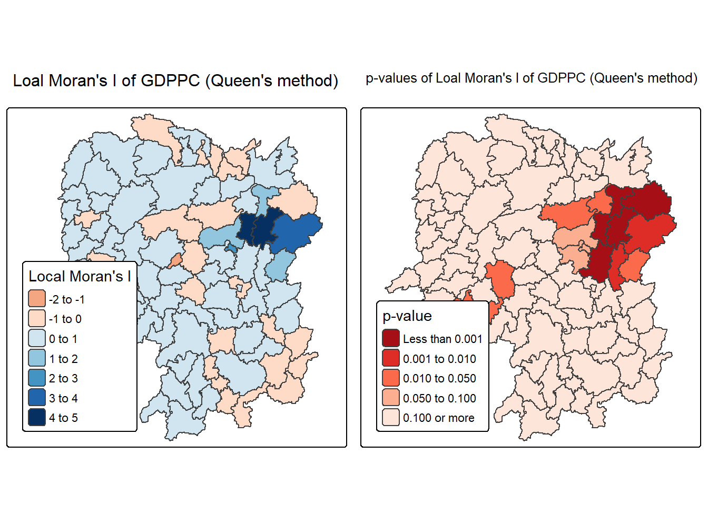
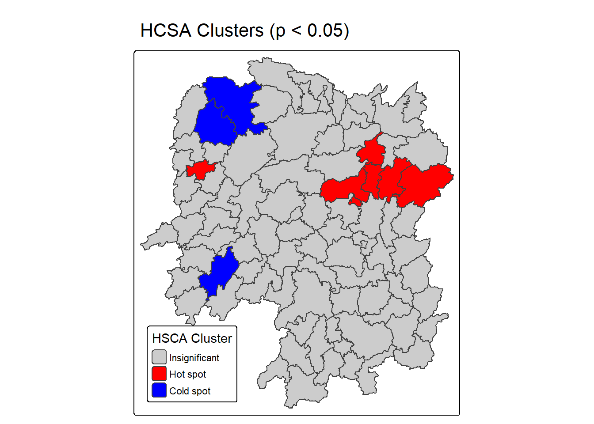

pacman::p_load(sf, sfdep, spdep, tmap, tidyverse)Hands-on Exexrcise 5b
Getting Started
Local Measures of Spatial Autocorrelation (LMSA) focus on the relationships between each observation and its surroundings rather than providing a single summary of these relationships across the map. So they are not summary statistics but scores that allow us to learn more abut spatial structure in our data. The general intuition behind the metrics is similar to the global one and can be decomposed into a collection of local ones (e.g. Local Indicators of Spatial Assocation).
In this hands-on exercise, we’ll learn how to compute Local Measures of Spatial Autocorrelation (LMSA) using sfdep library. Unlike the hands-on 5a, we will apply appropriate spatial statsitical method to discover if development are evenly distributed geographically (province level). If not, is there sign of spatial clustering and where are these clusters.
Import Libraries
The libraries used in this exercise would be:
sf: simple features in R to encode and analyze spatial vector data
sfdep: spatial dependence for simple features
tmap: used to draw thematic map
tidyverse: collection of R packages that for data manipulation and visualization
The Data
In this hands-on exercise, we’ll be analyzing the GDP per capita of Hunan, China. So we’ll be using the Hunan province administrative boundary layer at county level (ESRI shapefile). We’ll also be using the Hunan_2012 which is a csv file containing selected Hunan’s local development indicators in 2012.
Import Data
we’ll import the shapefile into R using st_read() and transform the geographic coordinate system in 32650 since it’s appropriate to use projected coordinate system and the raw data is in WGS 84
hunan <- st_read(dsn = "data/geospatial",
layer = "Hunan") %>%
st_transform(crs = 32650)Reading layer `Hunan' from data source
`C:\stefanie-fel\ISSS626-GAA\Hands-on_Ex\Hands-on_Ex05\data\geospatial'
using driver `ESRI Shapefile'
Simple feature collection with 88 features and 7 fields
Geometry type: POLYGON
Dimension: XY
Bounding box: xmin: 108.7831 ymin: 24.6342 xmax: 114.2544 ymax: 30.12812
Geodetic CRS: WGS 84We’ll import the Hunan_2012 into read_csv()
hunan2012 <- read_csv("data/aspatial/Hunan_2012.csv")Next, we’ll perform relational join
hunan <- left_join(hunan,hunan2012) %>%
select(1:4, 7, 15)Visualize Regional Development Indicator
The tmap() function is used to build two choropleth maps using equal interval (equal) and interval (quantile) classification method and plotted side by side
equal <- tm_shape(hunan) +
tm_polygons(fill = "GDPPC",
fill.scale = tm_scale_intervals(
style = "equal",
n = 5,
values = "brewer.blues"),
fill.legend = tm_legend(
title = "GDPPC",
position = tm_pos_in(
"left", "bottom"))) +
tm_borders(fill_alpha = 0.5) +
tm_title("Equal interval classification")
quantile <- tm_shape(hunan) +
tm_polygons(fill = "GDPPC",
fill.scale = tm_scale_intervals(
style = "quantile",
n = 5,
values = "brewer.blues"),
fill.legend = tm_legend(
title = "GDPPC",
position = tm_pos_in(
"left", "bottom"))) +
tm_borders(fill_alpha = 0.5) +
tm_title("Quantile interval classification")
tmap_arrange(equal,
quantile,
asp=1,
ncol=2)
Local Indicators of Spatial Association (LISA)
LISA are statistics that evaluate the existence of clusters and/or outliers in the spatial arrangement of a given variable. So if we’re studying distribution of GDP per capita of Hunan province, the local clusters in GDP per capita means that there’s counties that have higher or lower rates than is to be expected by chance alone.
In this section, we’ll learn how to apply appropriate Local Indicator for Spatial Association especially local Moran I to detect cluster and/or cluster from GDP per capita 2012
1. Compute Contiguity Spatial Weights
Before computing local spatial autocorrelation statistics, we need to compute a spatial weights of study area. to define the neighbourhood relationships between geographical units. We’ll be using the st_contiguity() to compute contiguity weight matrices for study area. The function builds neighbours list based on regions with contiguous boundaries.
nb <- sfdep::st_contiguity(hunan)
wt <- sfdep::st_weights(nb, style = "W")
wm_q <- hunan %>%
dplyr::mutate(
nb = I(nb),
wt = I(wt),
.before = 1
)
Note
We’ll use st_weights to calculate polygon spatial weights from nb list. The function has required 3 arguments:
nb: neighbours list created by st_neighbors()
style: by default there’s W, U, C, B, minmax and S.
allow_zero: if set to TRUE, tehn it assigns zero as lagged (distance) valye to zone without neighbours
summary(wm_q$nb)Neighbour list object:
Number of regions: 88
Number of nonzero links: 448
Percentage nonzero weights: 5.785124
Average number of links: 5.090909
Link number distribution:
1 2 3 4 5 6 7 8 9 11
2 2 12 16 24 14 11 4 2 1
2 least connected regions:
30 65 with 1 link
1 most connected region:
85 with 11 linksAs can be seen, the summary statistics shows 88 area units in Hunan and most connected area has 11 neighbours.
2. Row-standardized Weights Matrix
Next, we need to assign weights to each neighbouring polygon. The style="W" argument will be used to assign equal weight.
Note
The input of nb2listw() has to be object of class nb and takes in 2 major argument (i.e. style and zero.poly
The code uses
style="W"which means that each neighbour gets weight of 1 / (number of neighbours) for that polygon. Then weighted income values will be summed. What does this mean: every polygon distributes equal influence to its neighbours (e.g. you have 4 neighbours, then each gets 0.25 weights, while if you have 2 neighbours, then each gets 0.5 weights). This is intuitive way to summarize the neighbour’s values but it can potentially over or under estimate the satial autocorrelation in the data since it doesn’t consider edge neighbours.Alternatively we can use
style="B"which uses binary weights, so weight 1 if they have neighbours and 0 if they don’t have. This avoids the edge issue but doesn’t standardize rows. There are also other option thestyleargument takes in such as “C”, “U”, “minmax and”S”. C globally standardized (sums over all links to n), while U equals to C divided by number of neighbours (sums over all links to unity). S is the varance stabilizing coding scheme that Tiedelsforf et al. 1999 came up with.If
zero policy = TRUEthen weights vector of zero length are inserted for regions without neighbour in neighbours list.
3. Compute Local Moran’s I
Computing Moran’s I is done by using local_moran() which computes li values, given a set of zi values and a listw object providing neighbor weighting information for polygon associated with zi values.
In this example, we’ll compute local Moran’s I of GDPPC2012 at county level.
set.seed(1234)lisa <- wm_q %>%
mutate(local_moran = local_moran(GDPPC, nb, wt, nsim = 99)) %>%
unnest(local_moran)The function returns matrix of values with the following columns:
li: local Moran’s I statistics
E.li: the expected local moran statistics under randomization hypothesis
Var.li: the variance local moran statistics under randomization hypothesis
Z.li: the standard deviate of local moran statistic
Pr(): p-value of local moran statistic
{r} glimpse(lisa)
Next, we can map the values of local Moran’s I statistics.
tm_shape(lisa) +
tm_polygons(fill = "ii",
fill.scale = tm_scale_intervals(
style = "pretty",
n = 5,
values = "brewer.RdBu"),
fill.legend = tm_legend( title = "Local Morans'I",
position = tm_pos_out())) +
tm_borders(fill_alpha = 0.5) +
tm_title("Loal Morans'I of GDPPC (Queen's method)")
Next, we’ll map the local Moran’s I p-values since there’s evidence for both positive and negative li values. Since the positive and negative values may not be significant, its p-values can determine its significance
tm_shape(lisa) +
tm_polygons(fill = "p_ii",
fill.scale = tm_scale_intervals(
breaks = c(-Inf, 0.001, 0.01, 0.05, 0.1, Inf),
values = "-brewer.Reds"),
fill.legend = tm_legend( title = "p-value",
position = tm_pos_out())) +
tm_borders(fill_alpha = 0.5) +
tm_title("p-values of Loal Moran's I of GDPPC (Queen's method)")
We can also visualize them side by side like so
ii.map <- tm_shape(lisa) +
tm_polygons(fill = "ii",
fill.scale = tm_scale_intervals( style = "pretty",
n = 5,
values = "brewer.RdBu"),
fill.legend = tm_legend( title = "Local Moran's I",
position = tm_pos_in( "left", "bottom"))) +
tm_borders(fill_alpha = 0.5) +
tm_title("Loal Moran's I of GDPPC (Queen's method)")p_ii.map <- tm_shape(lisa) +
tm_polygons(fill = "p_ii",
fill.scale = tm_scale_intervals( breaks = c(-Inf, 0.001, 0.01, 0.05, 0.1, Inf),
values = "-brewer.Reds"),
fill.legend = tm_legend( title = "p-value",
position = tm_pos_in("left", "bottom") )) +
tm_borders(fill_alpha = 0.5) +
tm_title("p-values of Loal Moran's I of GDPPC (Queen's method)")tmap_arrange(ii.map, p_ii.map, asp=1, ncol=2)
4. Prepare and Visualize LISA Map
Visualize LISA involve creating maps that highlight significant spatial patterns, like hot spots (high values clustered together) or cold spots (low values clustered together) and identify special outliers. The common methods include choropleth maps that shops LISA values, Moran scatterplots shows depict local spatial autocorrelation for individual locations and hot spots analysis map.
Before we can generate the LISA cluster map, we need to plot the Moran scatterplot.
Plot Moran’s Scatterplot
The Moran’s scatterplot is used to visualize the relationship between variable’s value and the average values of its neighbouring locations (its spatial lag) to detect spatial autocorrelation. By plotting standardized values of the varaible on the x-axis and its spatial lag on y-axis, the plots slope reveals patterns of high-high or low-low value cluster and high-low or low-high value outliers.
We’ll use st_lg() to calulcate the spatial lag of GDPPC of given neighbour (nb) and weigts list (wt)
lisa <- lisa %>%
mutate(lag_GDPPC = st_lag(
GDPPC, nb, wt),
.before = 1) %>%
unnest(lag_GDPPC)Next, we’ll plot the Moran’s scatterplot against spatial lag.
ggplot(data = lisa,
aes(x = GDPPC,
y = lag_GDPPC)) +
geom_point() +
geom_smooth(method = "lm",
se = FALSE,
color = "red") +
labs(x = "GDPPC",
y = "Spatial Lag of GDPPC",
title = "Moran Scatterplot") +
theme_minimal()
Since the plot above is not very intuitive, we’ll use the code below to split them into 4 quadrants (low-low, high-high, low-high or high-low).
ggplot(data = lisa,
aes(x = GDPPC,
y = lag_GDPPC,
color = mean)) +
geom_point(size = 2) +
geom_smooth(method = "lm",
se = FALSE,
color = "black") +
geom_hline(yintercept=mean(lisa$lag_GDPPC), lty=2) +
geom_vline(xintercept=mean(lisa$GDPPC), lty=2) +
scale_color_manual(
values = c("High-High" = "red",
"Low-Low" = "blue",
"Low-High" = "lightblue",
"High-Low" = "pink")) +
labs(x = "GDPPC",
y = "Spatial Lag of GDPPC",
title = "Moran Scatterplot with LISA Quadrants") +
theme_minimal()
Plot Moran’s Scatterplot with Standardized Variable
We’ll use scale() to center and scale the variable. It is done by subtracting the mean (omitting NAs) the corresponding locums and scaling is done by diving the centered variable by their standard deviations.
lisa <- lisa %>%
mutate(z_GDPPC = scale(GDPPC),
z_lag_GDPPC = scale(lag_GDPPC),
.before = 1)Then as.vector() is added to make sure that the data type we get out of this is a vector, that map neatly into dataframe.
ggplot(data = lisa,
aes(x = z_GDPPC,
y = z_lag_GDPPC,
color = mean)) +
geom_point(size = 2) +
geom_smooth(method = "lm",
se = FALSE,
color = "black") +
geom_hline(yintercept=mean(lisa$z_lag_GDPPC), lty=2) +
geom_vline(xintercept=mean(lisa$z_GDPPC), lty=2) +
scale_color_manual(
values = c("High-High" = "red",
"Low-Low" = "blue",
"Low-High" = "lightblue",
"High-Low" = "pink")) +
labs(x = "Standardised GDPPC",
y = "Standardised Spatial Lag of GDPPC",
title = "Standardised Moran Scatterplot with LISA Quadrants") +
theme_minimal()
Prepare LISA Map Classes
We’ll prepare the LISA cluster map using these steps:
- Derive spatially lagged variable and center the spatially lagged variable around its mean
- Center local Moran’s around the mean
- Set statistical significance level for local Moran
signif <- 0.05 Plot and Visualize LISA Map
By default, LISA classes are stored in mean, median adn pysal field of the dataframe. To prepare the map, we’ll derive a new field called LISA-cluster from one of the three field.
lisa <- lisa %>%
mutate(
LISA_cluster = ifelse(
p_ii < 0.05,
as.character(mean),
"Insignificant"),
LISA_cluster = factor(
LISA_cluster,
levels = c("Insignificant", "Low-Low", "Low-High", "High-Low", "High-High")
)
)Now, we can plot the LISA map.
lisa_map <- tm_shape(lisa) +
tm_polygons(
fill = "LISA_cluster",
fill.scale = tm_scale_categorical(
values = c(
"grey80", # Insignificant
"blue", # Low-Low
"lightblue", # Low-High
"pink", # High-Low
"red" # High-High
)
),
fill.legend = tm_legend(
title = "LISA Cluster",
position = tm_pos_in("left", "bottom"))
) +
tm_borders() +
tm_title("Local Moran's I Clusters (p < 0.05)")
lisa_map
Let’s compare side by side for better comparison the local Moran’s I of GDPPC (using Queen’s method) and local Moran’s I cluster (using p-value <0.005)
Hot Spot and Cold Spot Analysis (HCSA)
Hot spots and cold spots analysis is a technique used to identify statistically significant clusters of high values (hot spots) or low values (cold spots) of geographically referenced attributed. The analysis help visualize and understand spatial patterns and reveal areas where data points are clustered more densely than expected from random chance.
Hot spots are areas where high values are concentrated and is surrounded by other high values. It is used to describe a region or value that’s higher to its surroundings. Whereas cold spots are areas with low values are concentrated and surrounded by other low values.
To determine hot spots and cold spots analysis, we use Getis-ord Gi* statistics. The analysis consist of 4 steps:
Deriving spatial weight matrix
Computing Gi* statistics
Mapping Gi* statistics
Communicating the analysis results
Derive Spatial Weight Matrix
Spatial autocorrelation considered units which shared border, however for Getis-ord Gi* statistics, we are defining neighbours based on distance.
There are two type of distance-based proximity matrix:
Fixed distance weight matrix
Adaptive distance weight matrix
Inverse distance weights
Compute Fixed Distance Weight
In this section, we’ll learn how to compute fixed distance weights matrix using st_dist_band() and st_weights()
First, we need to determine the upper limit for distance band
ct <- critical_threshold(st_geometry(hunan))
ct[1] 60799.91The summary report that the largest first nearest distance is 60.8 km, so using this as upper threshold gives certainty that all units will have at least one neighbour.
Using the critical threshold value computed above, we can compute the fixed distance weight
hunan_fdw <- hunan %>%
mutate(nb = include_self(
st_dist_band(
st_geometry(geometry),
upper = ct)),
wt = st_weights(nb,
style = "W"),
.before = 1) Compute Adaptive Distance Weights
One of the characteristics of fixed distance weight matrix is that more densely settled areas (usually urban areas) tend to have more neighbours and the less densely settled areas (usually the rural counties) tend to have lesser neighbours. Having many neighbours smooth the neighbour relationship across more neighbours.
It is possible to control the number of neighbours directly using k-nearest neighbours, either accepting asymmetric neighbours or imposing symmetry. We’ll use st_dist_band() and st_weights()
hunan_adw <- hunan %>%
mutate(nb = include_self(
st_knn(
st_geometry(geometry),
k = 6)),
wt = st_weights(
nb, style = "W"),
.before = 1)Compute Local Gi*
Local Gi* is a Getis-ord statistics used in spatial analysis to identify statistically significant hot spots and cold spots of high or low attribute values within dataset. It measure the spatial clustering of values by comparing the total value within a specified neighbourhood to the global total, which produce Z-score and p-value for each location to determine the likelihood that observed pattern is not because of random chance.
In this section, we’ll gain hands-on experience on performing Gi* analysis by using local_gstar_perm()
HCSA_fdw <- hunan_fdw %>%
mutate(
gistar = local_gstar_perm(
GDPPC, nb, wt, nsim = 99),
.before = 1) %>%
unnest(gistar)Map Local Gi* p-values
The choropleth show evidence for both positive and negative li values. But, it’s useful to consider the p-values for each of these values.
tm_shape(HCSA_fdw) +
tm_polygons(fill = "p_sim",
fill.scale = tm_scale_intervals(
breaks = c(-Inf, 0.001, 0.01, 0.05, 0.1, Inf),
values = "-brewer.Reds"),
fill.legend = tm_legend(
title = "simulated p-value",
position = tm_pos_out())) +
tm_borders(fill_alpha = 0.5) +
tm_title("p-values of local Gi* of GDPPC (Fixed distance)")
For effective interpretation, we’ll plot both the Gi* values map and its corresponding p-values.
Gi_star_map <- tm_shape(HCSA_fdw) +
tm_polygons(fill = "gi_star",
fill.scale = tm_scale_intervals(
style = "pretty",
n = 5,
values = "-brewer.rd_bu"),
fill.legend = tm_legend(
title = "local Gi*",
position = tm_pos_in(
"left", "bottom"))) +
tm_borders(fill_alpha = 0.5) +
tm_title("Local Gi* of GDPPC")
p_values_map <- tm_shape(HCSA_fdw) +
tm_polygons(fill = "p_sim",
fill.scale = tm_scale_intervals(
breaks = c(0, 0.001, 0.01, 0.05, 0.1, 1),
values = "-brewer.reds"),
fill.legend = tm_legend(
title = "p-value",
position = tm_pos_in("left", "bottom")
)) +
tm_borders(fill_alpha = 0.5) +
tm_title("p-values of local Gi* of GDPPC (fixed distance)")
tmap_arrange(Gi_star_map, p_values_map, asp=1, ncol=2)
Plot and Visualize HCSA Map
By default, the HCSA classes are stored in cluster field of HCSA_fdw dataframe. To prepare for the map, we will derive a new field called HCSA_cluster from cluster field.
HCSA_fdw <- HCSA_fdw %>%
mutate(HCSA_cluster = case_when(
p_sim > 0.05 ~ "Insignificant",
p_sim <= 0.05 & cluster == "High" ~ "Hot spot",
p_sim <= 0.05 & cluster == "Low" ~ "Cold spot",
TRUE ~ "Other"),
HCSA_cluster = factor(
HCSA_cluster,
levels = c("Insignificant", "Hot spot", "Cold spot")
),
.before = 1
)Next, we can plot the HCSA map
HCSA_map <- tm_shape(HCSA_fdw) +
tm_polygons(
fill = "HCSA_cluster",
fill.scale = tm_scale_categorical(
values = c(
"grey80", # Insignificant
"red", # Low-Low
"blue" # High-High
)
),
fill.legend = tm_legend(
title = "HSCA Cluster",
position = tm_pos_in("left", "bottom"))
) +
tm_borders() +
tm_title("HCSA Clusters (p < 0.05)")
HCSA_map
Next, we can plot side by side for better comparison.
tmap_arrange(Gi_star_map, HCSA_map, asp=1, ncol=2)